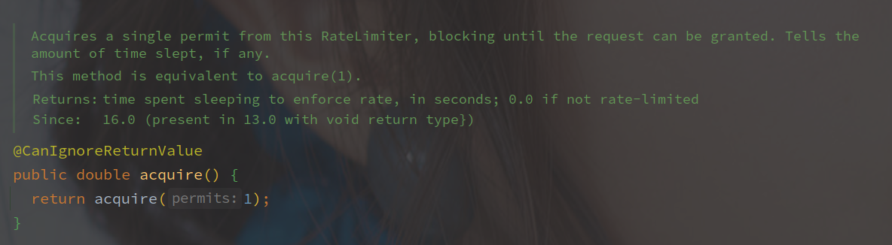
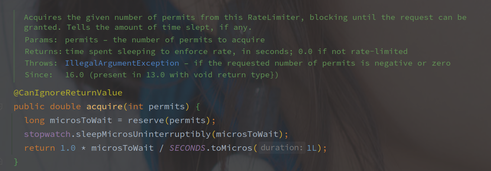
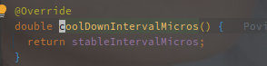

RateLimiter
[TOC]
概述
RateLimiter 是 Guava 工具包中的令牌桶限流器的实现。
RateLimiter 的实现中包含两种：
- SmoothBursty - 平滑生成 Permit，可以应对突发流量
- SmoothWarmingUp - 平滑生成 Permit，并且带有热启动的效果
Demo
public class Main {
public static void main(String[] args) throws InterruptedException {
// 1s 创建一个 permit
// 最终创建的对象是 SmoothBursty
final RateLimiter rateLimiter = RateLimiter.create(1);
for (int i = 0; i < 10; i++) {
rateLimiter.acquire();
System.out.println(LocalTime.now().getSecond());
if (i == 5) {
TimeUnit.SECONDS.sleep(2);
}
}
}
}
// 输出如下：
// 22
// 23
// 24
// 25
// 26
// 27
// 29
// 29
// 30
// 31
中间间隔了几秒之后，连续输出了两个，因为创建的 SmoothBursty 默认支持1s的突发流量（1s创建一个 Token，所以它也只囤积1个 Token。
public class Main {
public static void main(String[] args) throws InterruptedException {
// 最终创建的对象是 SmoothWarmingUp，并且有5s的预热期
final RateLimiter rateLimiter = RateLimiter.create(5, Duration.ofSeconds(5));
while (true){
rateLimiter.acquire();
System.out.println(LocalTime.now().getSecond());
}
}
}
// 输出如下:
// 44
// 45
// 46
// 46
// 47
// 47
// 47
// 48
// 48
// 49
// 49
// 49
// 49
// 50
// 50
// 50
// 50
// 50
输出从44开始，逐渐会稳定在每秒五个值。
相关组件
SleepingStopwatch
Stopwatch 是 Guava 中的计时器实现，SleepStopwatch 持有 Stopwatch 的引用来获取启动的时间以及线程的 Sleep。
源码分析
关键成员变量
| 变量名 | 变量含义 |
|---|---|
| maxPermits | 最大的 Permit 数 |
| storedPermits | 当前的 Permit 数 |
| stableIntervalMicros | 固定的产生速率，多少毫秒产生一个 Permit |
| nextFreeTicketMicros | 下一次产生 Permit 的时间 |
RateLimiter 中以相对的时钟周期作为计算的标准，记录当前统计过 Permit 的时间，作差并除以速率计算生成的 Permit。
相对时钟周期使用 Stopwatch 作为统计工具，类初始化的时候会开启计时，之后读取的时间都是于开始时间的差值。
先从 acquire 看起，该方法是无超时的获取令牌。

直接调用的 acquire 方法，参数为获取的令牌（Premit）数，默认为1。

reserve 方法用来获取 permits 可用的时间，最终返回的是需要等待的时间，而 SleepingStopwatch#sleepMicrosUninterruptibly 方法用来挂起线程一定的时间。
RateLimiter#reserve 的实现如下：

reserveAndGetWaitLength - 保存并获取等待藏独
mutex 是以双重锁加载的单例 Object 对象，作为锁资源，SleepStopwatch#readMicros 用来获取类启动到当前的时间戳。

reserveEarliestAvailable - 查看最早可用时间
该方法在子类 SmoothRateLimiter 实现。
// SmoothRateLimiter#reserveEarliestAvailable
@Override
final long reserveEarliestAvailable(int requiredPermits, long nowMicros) {
// 该方法用来重新统计 permits 的数目，参数就是应用的启动时间
resync(nowMicros);
// 下次可用的相对时钟周期
long returnValue = nextFreeTicketMicros;
// 此次消耗的 permit
// 因为 Permit 的数目可能不够，所以取希望的和现存的最小值
double storedPermitsToSpend = min(requiredPermits, this.storedPermits);
// 需要等待的令牌数
double freshPermits = requiredPermits - storedPermitsToSpend;
// storePermitsToWaitTime 由子类实现
long waitMicros =
storedPermitsToWaitTime(this.storedPermits, storedPermitsToSpend)
+ (long) (freshPermits * stableIntervalMicros);
// 需要加上等待时间
this.nextFreeTicketMicros = LongMath.saturatedAdd(nextFreeTicketMicros, waitMicros);
// 当前令牌减去需要消耗的
this.storedPermits -= storedPermitsToSpend;
// 返回 nextFreeTicketMicros
return returnValue;
}
RateLimiter 使用经过的时间来计算令牌的数目。
resync - 重新统计当前的 Permit
该方法使用当前的相对时钟数来重新计算剩余的 Permit。
/** Updates {@code storedPermits} and {@code nextFreeTicketMicros} based on the current time. */
void resync(long nowMicros) {
// if nextFreeTicket is in the past, resync to now
// nextFreeTicketMicros 就是上次获取 permit 的时间
if (nowMicros > nextFreeTicketMicros) {
// 计算产生的新的 permits 的数量
// coolDownIntervalMicros 为冷却时间，方法由子类实现
double newPermits = (nowMicros - nextFreeTicketMicros) / coolDownIntervalMicros();
// 求出当前的 permit 的数量
storedPermits = min(maxPermits, storedPermits + newPermits);
// 更新 nextFreeTicktMicros 的值
nextFreeTicketMicros = nowMicros;
}
RateLimiter 并没有使用相对直观的（另起线程生成 Token 的形式），而是以相对时钟数之差来计算目前的 Permit。
nextFreeTicketMicros 是最早可以获取到 Permit 的相对时间， nowMicros - nextFreeTicketMicros 就表示中间的间隔时间，处以 coolDownIntervalMicros() 就标识可以获取到的新的 Permit。
coolDownIntervalMicros() 表示 Permit 的获取间隔，在 SmoothBursty 和 SmoothWarmingUp 中有各自的实现。
以下为 SmoothBursty 的实现:

直接使用的 stableIntervalMicros，表示以恒定的速率生成 Permit。